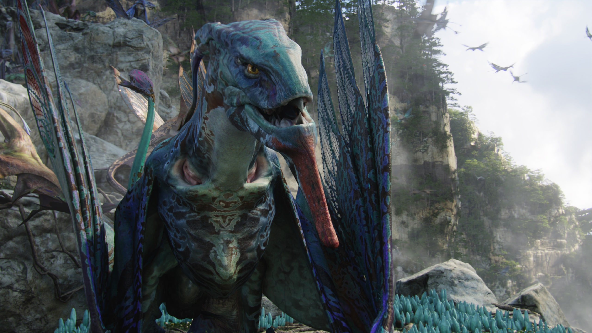
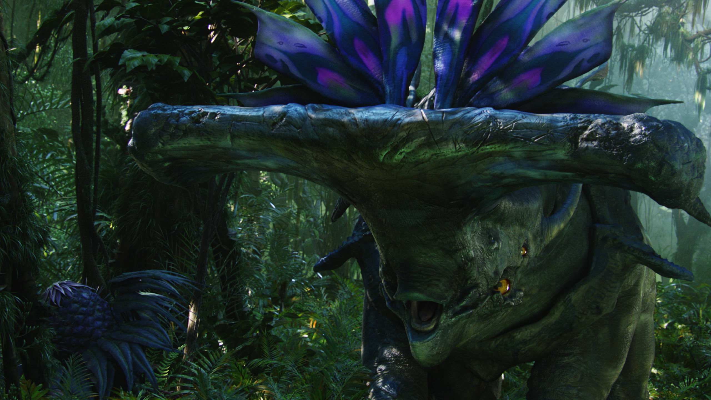
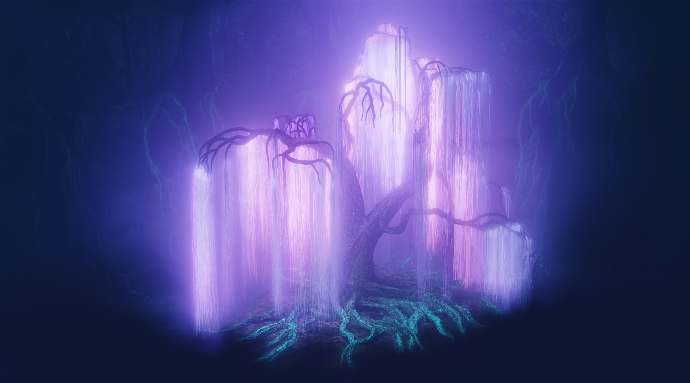

Pandora az Alfa Centauri naprendszerben a Polyphemos gázóriás körül kering három másik holddal
együtt.
A Földtől
4,37 fényévnyire található. Egy hatalmas őserdő, tele gyönyörű vízesésekkel, óriási
hegyekkel,
ahol a dzsungel
fluoreszkál. Tele van az emberekre veszélyes repülő lényekkel, szörnyekkel. Érdekessége, hogy minden
szárazföldi
pandorai állatnak hat lába van.
Az unobtanium nevű szupravezető is megtalálható a holdon, mivel ez az érc képes lebegni, így bizonyos
lelőhelyek
is
lebegnek. Pandorán így hatalmas lebegő sziklák is találhatók. A növényeknek nincs szükségük
fotoszintézisre,
mert a
naprendszer napja is más szerkezetű, ezért lehetnek pirosak, barnák, még lilák is. A növények színüknek
megfelelően
képesek világítani.

Állat világa:
- Thanator:
- Pandorán ők a csúcsragadozók. Körülbelül 4 méter magasak. Az állat hangulatát a tarkóján lévő szaruképződmények mutatják meg.
- Banshee/ikran:
- A na’vik ezeken repülnek. Szárnyas, tarajos hüllők, melyek nagyon színesek.
- Leonopteryx/toruk:
- Az ikránok rokona, de nagyobbal és vadabbak. Megszelídítésükkel nagyon kevesen próbálkoznak.
- Tapirus:
- Malacokra hasonló állatok, amelyekre a ragadozók szívesen vadásznak.
- Direhorse:
- Földi lóra hasonlító állatok. A na’vik a szárazföldön ezeken utaznak.
- Viperwolf:
- Földi hiénaszerű ragadozók.
- Prolemuris:
- Nem agresszív fáramászó majomszerű lények.
- Hammerhead titanothere:
- Kalapácsfejű, agresszív növényevő.
- Medusa:
- Levegőben élnek, a medúzákhoz hasonlítanak.
- Tetrapteron:
- Az ikranokhoz hasonlítanak.

Növény világa:
- Helicoradian:
- Csoportokban élő tölcséres növény, ami érintésre összehúzódik. A karácsonyfaféreg nevű tengeri élőlényre hasonlít.
- Octoshroom:
- Egy óriás gombafaj.
- Lelkek fája:
- Fontos szimbólum a na’vik számára. Fehér színű fűzfára hasonlító fa. Az élő és az elhunyt na'vik kollektív emlékeit tárolja.
- Otthonfa:
- A klánok ilyen fák alatt laknak.